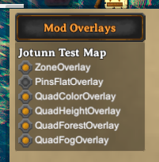

Map Overlays & Drawings
Valheim's Minimap is used to display the current world map including many layers like exploration status (fog), height and biome information and more. When talking about the Minimap we refer both to the small "preview" on the right upper corner and the full map view shown when pressing "M" in-game. Jötunn provides an API for creating either overlays on top of the map or drawing on specific layers. You can create your own MapOverlay or MapDrawing classes using the MinimapManager.
Creating Overlays
The simplest way to add custom content to the map is to use the MapOverlay class. This class provides a Texture2D which you can write to directly. This Texture2D is then rendered directly on top of the Vanilla Minimap. By default the overlays respect the exploration status of the map (the "fog") so your content is not shown on areas the player has not yet explored. You can optionally decide to ignore the exploration status of the map so your custom overlay is always visible.
Example
In this example we will implement an overlay which shows the world's zones laid overtop of the map. We subscribe to the OnVanillaMapAvailable event and draw the zone borders onto the overlay's texture.
Note: The code snippets are taken from our example mod.
private void Awake()
{
// Add map overlays to the minimap on world load
MinimapManager.OnVanillaMapAvailable += CreateMapOverlay;
}
// Map overlay showing the zone boundaries
private void CreateMapOverlay()
{
// Get or create a map overlay instance by name
var zoneOverlay = MinimapManager.Instance.GetMapOverlay("ZoneOverlay");
// Create a Color array with space for every pixel of the map
int mapSize = zoneOverlay.TextureSize * zoneOverlay.TextureSize;
Color[] mainPixels = new Color[mapSize];
// Iterate over the dimensions of the overlay and set a color for
// every pixel in our mainPixels array wherever a zone boundary is
Color color = Color.white;
int zoneSize = 64;
int index = 0;
for (int x = 0; x < zoneOverlay.TextureSize; ++x)
{
for (int y = 0; y < zoneOverlay.TextureSize; ++y, ++index)
{
if (x % zoneSize == 0 || y % zoneSize == 0)
{
mainPixels[index] = color;
}
}
}
// Set the pixel array on the overlay texture
// This is much faster than setting every pixel individually
zoneOverlay.OverlayTex.SetPixels(mainPixels);
// Apply the changes to the overlay
// This also triggers the MinimapManager to display this overlay
zoneOverlay.OverlayTex.Apply();
}
Warning
Since the map is different after every world load, you should not save your own reference to the MapOverlay or MapDrawing classes but always get it from the manager using GetMapOverlay or GetMapDrawing. Jötunn automatically creates and destroys the overlays on every game load and logout.
Creating Drawings
Valheim's actual map consists of many individual layers. Jötunn exposes some of them for mods to draw on via MapDrawings.
But first we give some details about the vanilla map structure.
Map Layers
The Minimap is composed using multiple layers/filters and in a specific order. The MapDrawing object has several local Texture2D members corresponding to the first four of the following layers. In addition to the layers used by the MapDrawing object, there are more layers that interact with the Minimap which we do not use. These are displayed here as a reference.
- _MainTex
Texture displayed on normal terrain, eg, the colour of meadows. - _MaskTex
Mask used to determine whether to display forests or not. 1 for forest, 0 for no forest. - _HeightTex
Mask that determines height of different features. eg, Oceans, and mountains. Determines where MountainTex and WaterTex is displayed. - _FogTex
Mask that determines where fog is displayed. Most values mean there is fog. - _BackgroundTex
Colour of background texture. Displayed underneath map? Effects _MainTex. Gives an additional textured texture to the land. - _FogLayerTex
Controls the colour of the Fog overlay. Also controls some sort of shading underneath water. Affected by world light. Lighter in center, darker in outside. - _MountainTex
The texture displayed on mountains. Works with the _heightTex mask. - _ForestTex
Controls the colour of forest areas. Is masked by _MaskTex. - _ForestColor
Could not determine. - _WaterTex
Controls shallow water and shorelines. Does not control deep ocean. - _SpaceTex
Controls the spacey texture outside the large globe. - _CloudTex
Controls the clouds that fly overtop everything else.
The following are some details we have figured out about the order of the vanilla map layers for reference:
Fog (6) on top, then clouds (12), then forest (8) (but is composited with _HeightTex (3) data). Then _MainTex (1) is displayed alongside _WaterTex (10) and _MountainTex (7) and _FoglayerTex (6). _BackgroundTex (5) also affects _MainTex somehow, it's best to just clear it.
_SpaceTex controls the space-themed texture background that's seen outside of the large minimap.
_MaskTex (2), _HeightTex (3), and _FogTex (4) are just used as filters/masks.
Drawing to the Main Layer
Set a Color value on the MainTex of the MapDrawing instance to override the vanilla map at that pixels position. Choose whichever RGB colors you want, and set the alpha value to maximum.
Drawing to the Height Layer
Set the Red value of a Color on the HeightFilter to correspond to the world height that you want.
Less than 0-30 means ocean height. 31 and up corresponds to variously shaded land heights until it reaches the mountain layer.
The MinimapManager provides a shortcut for the "meadow height".
Drawing to the Fog and Forest Layers
Set the "Red" value of a Color on the FogFilter or the ForestFilter of the MapDrawing instance to toggle either of the layers on the pixels position on or off.
A "Red" value of 0 disables the filter on the position, everything unequal 0 enables it.
The MinimapManager provides a shortcut for turning the filter on or off.
Example
In this example we will draw a square originating on each Map Pin. This time we subscribe to the manager's OnVanillaMapDataLoaded event to make sure all pins have already been loaded by the game. The actual drawing involves setting the terrain height for the square to a flat value, removing forest, removing fog, and changing the main texture color.
Note: The code snippets are taken from our example mod.
private void Awake()
{
// Add map overlays to the minimap after map data has been loaded
MinimapManager.OnVanillaMapDataLoaded += CreateMapDrawing;
}
// Draw a square starting at every map pin
private void CreateMapDrawing()
{
// Get or create a map drawing instance by name
var pinOverlay = MinimapManager.Instance.GetMapDrawing("PinOverlay");
// Create Color arrays which can be set as a block on the texture
// Note: "Populate" is an extension method provided by Jötunn
// filling the new array with the provided value
int squareSize = 10;
Color[] colorPixels = new Color[squareSize*squareSize].Populate(Color.blue);
Color[] filterPixels = new Color[squareSize*squareSize].Populate(MinimapManager.FilterOff);
Color[] heightPixels = new Color[squareSize*squareSize].Populate(MinimapManager.MeadowHeight);
// Loop every loaded pin
foreach (var p in Minimap.instance.m_pins)
{
// Translate the world position of the pin to the overlay position
var pos = MinimapManager.Instance.WorldToOverlayCoords(p.m_pos, pinOverlay.TextureSize);
// Set a block of pixels on the MainTex to make the map use our color instead of the vanilla one
pinOverlay.MainTex.SetPixels((int)pos.x, (int)pos.y, squareSize, squareSize, colorPixels);
// Set a block of pixels on the ForestFilter and FogFilter, removing forest and fog from the map
pinOverlay.ForestFilter.SetPixels((int)pos.x, (int)pos.y, squareSize, squareSize, filterPixels);
pinOverlay.FogFilter.SetPixels((int)pos.x, (int)pos.y, squareSize, squareSize, filterPixels);
// Set a block of pixels on the HeightFilter so our square will always be drawn at meadow height
pinOverlay.HeightFilter.SetPixels((int)pos.x, (int)pos.y, squareSize, squareSize, heightPixels);
}
// Apply the changes to all textures
// This also triggers the MinimapManager to display this drawing
pinOverlay.MainTex.Apply();
pinOverlay.FogFilter.Apply();
pinOverlay.ForestFilter.Apply();
pinOverlay.HeightFilter.Apply();
}
Warning
Using a MapDrawing which alters the fog layer (i.e. has written data to the FogFilter texture) will stop the game from updating the exploration data on the map as long as the overlay is enabled. Mods using the fog layer should be aware of this fact. You can destroy the FogFilter texture on the ModDrawing instance using Unity's Object.Destroy() to reenable the game's exploration while your overlay is still enabled. Disabling the overlay completely via GUI has the same effect.
Toggle Overlays via GUI
Jötunn adds a button to the large map view and adds a toggle for every MapOverlay or MapDrawing created by a mod. There you can enable or disable every layer individually:
